In this project, I implemented the basics of a ray-tracing 3D renderer. I worked on everything from ray intersection to sampling to global illumination and adaptive sampling. This project illuminated various parts of how we can effectively model the phenomenon of light
Notes:
Ray generation is a fairly simple process. We model the sensor on our camera. Our camera consists of -by- pixels in . For each pixel, we generate a point in , in essence, simulating where a photon might “land” on the camera pixel similarly to the random nature of the phenomenon in the physical world. Once we have this point, we perform a transform to world space (). The slide below shows our camera sensor in world space and the ray we hope to generate:
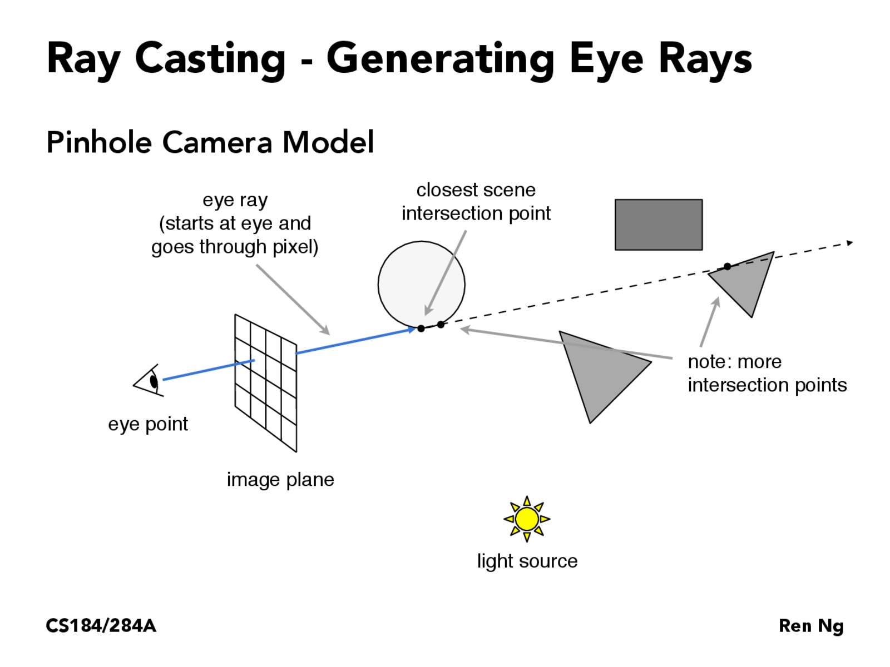
We’re given two “corner” vectors for the camera, one on the bottom right and the other on the top left. Transforming from our sample now becomes much simpler: we simply walk along the difference between the top right and bottom left corner in proportion to the sample we’ve generated.
In essence, for some bottom-left corner and some top-right corner , and some sample , our new -coordinate is simply , and our -coordinate is simply .
This is our ray’s direction in camera space - we now apply the transform vector c2w to convert it to world space, giving us the direction vector of our ray. The origin is the position of our camera.
Next, I’ll explain the role primitive intersection plays, both algorithmically and as part of the render pipeline.
Primitive intersection is basically a way for us to tell if our ray “hits” any object in the world. We’ve defined two types of primitives - triangles and spheres - and naively, we test our ray against each primitive according to a certain equation to see if it intersects.
The general idea for intersecting any implicit surface is described in the slide below.
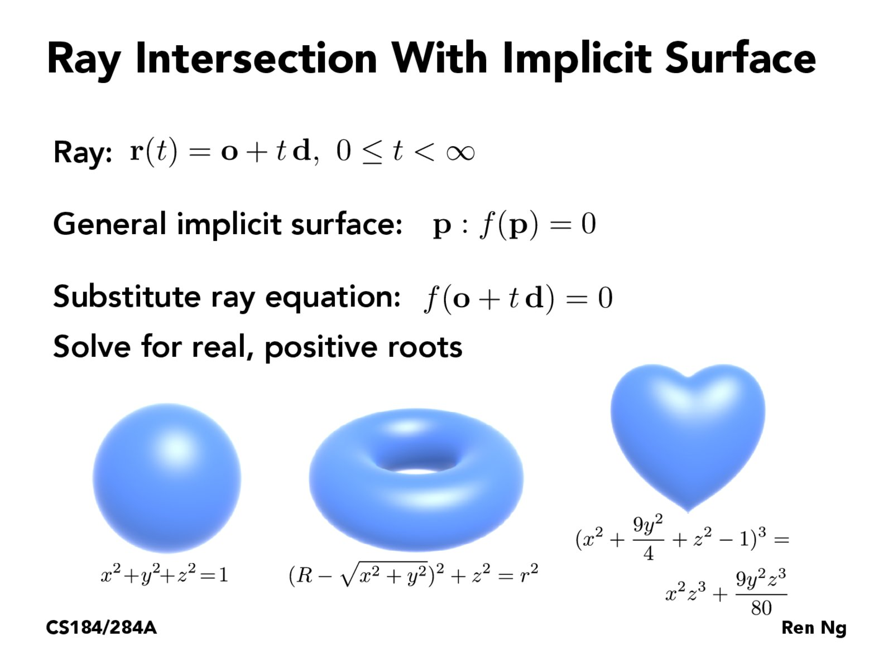
Essentially, we describe our object’s surface with some equation and we know our ray’s equation is simply that of a line (). Where these intersect describes the time that our ray hits the surface of our object.
There are a few optimizations to be made - the Möller-Trumbore algorithm in particular distills a performant algorithm for ray-triangle intersection, given the barycentric coordinates of a triangle.
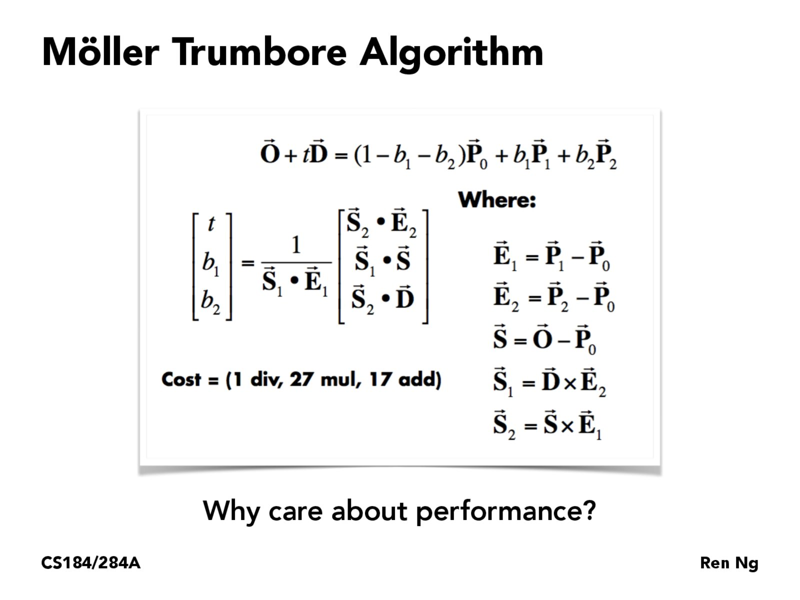
This was the algorithm I had implemented for testing ray intersection with triangles. Intersections with our remaining primitive, the sphere, can be tested using the quadratic formula, and we solve for the intersection between both the equation for a ray and the surface of a sphere, as described below.
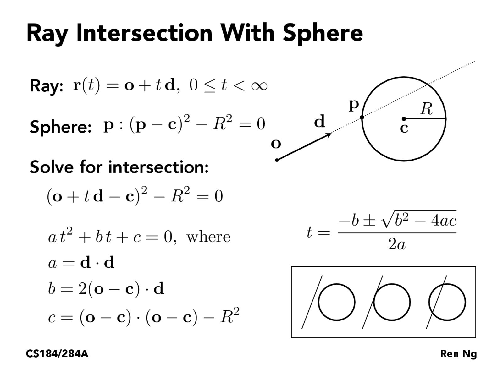
When generating our ray, we define a valid range of values and clip this range as we intersect with more primitives. This essentially discards intersections with primitives further than the closest one.
Once implementing intersection is complete, we should be able to trace rays and see all primitives in the scene from the camera’s point of view.
Below is the function I ran to generate the following images:
function 1_primitives() {
./pathtracer -t 20 -r 480 360 -f 1_spheres.png ../dae/sky/CBspheres_lambertian.dae
./pathtracer -t 20 -r 480 360 -f 1_bunny.png ../dae/sky/CBbunny.dae
}
And the resultant images:
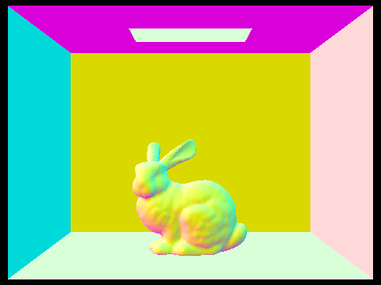
Bunny took a long time to render (174.5 seconds on 20 threads) because we’re testing every ray against &every primitive* in the scene. Once we implement BVH, it’ll look much nicer.
As explained earlier, testing every ray against every object is a massive waste of time (). Our goal is to reduce the second factor drastically, perhaps more along the lines of a constant number of objects found via a logarithmic search of the object-space.
The BVH algorithm given to us accomplishes this phenomenon. The algorithm is simple, forming a sort of binary tree. We construct a bounding box around all of our objects, and a target number of objects to have in our leaf node. We split the first node (the root, the bounding box containing every object) along its largest axis into a left- and right- node. We recurse, performing the same algorithm on the left- and right- children until we have a node with no more than our target number of objects
Now, to trace a ray, we simply have to check to see if it intersects with a bounding box. The slides below were particularly helpful in implementing this intersection-check. Essentially, we cast a ray and clip it by each axis.
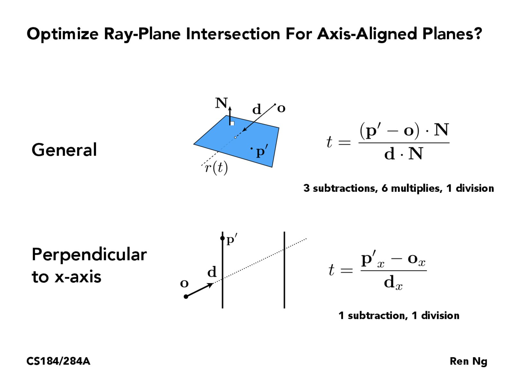
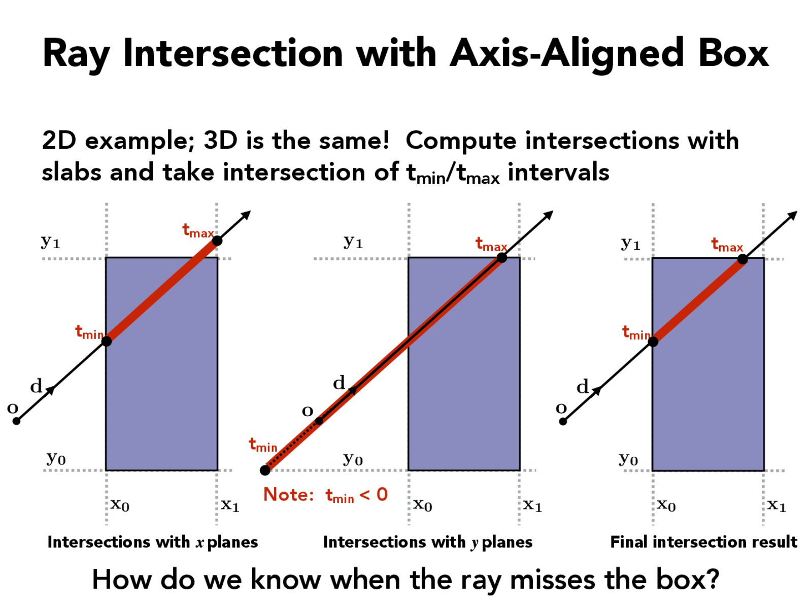
This reduces the number of objects we test against to a constant value, along with a search time to reach our leaf box.
We can now render .dae files that took far too long to render earlier.
I used the following function to render the images shown below.
function 2_bvh() {
./pathtracer -t 20 -r 480 360 -f 2_lucy.png ../dae/sky/CBlucy.dae
./pathtracer -t 20 -r 480 360 -f 2_wall-e.png ../dae/sky/wall-e.dae
./pathtracer -t 20 -r 480 360 -f 2_spheres.png ../dae/sky/CBspheres_lambertian.dae
}
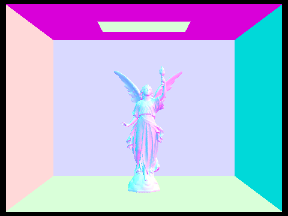
CBlucy.dae, with 133,796 primitives, would have been impossible to render before BVH. But here? It took barely any time! (Building the BVH took 0.931 seconds and rendering the scene took 0.137 seconds, with just over 1.014 intersection tests per ray).
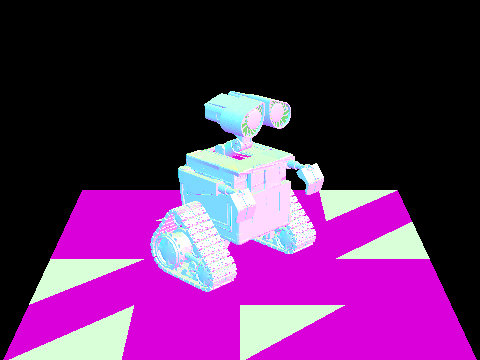
wall-e.dae was an even more complex model with 240,326 primitives! Building the BVH took 1.875 seconds, and rendering the scene took 0.130 seconds, with 1.101 intersection tests per ray.
We previously rendered CBbunny.dae. The picture was the exact same, so it won’t be shown here, but a speed comparison would be prudent. The file consists of only 25,888 primitives, but took 174.5 seconds earlier. Let’s compare the output between our last run and this run.
Without BVH:
./pathtracer -t 20 -r 480 360 -f 1_bunny.png ../dae/sky/CBbunny.dae
[PathTracer] Input scene file: ../dae/sky/CBbunny.dae
[PathTracer] Collecting primitives... Done! (0.0032 sec)
[PathTracer] Building BVH from 28588 primitives... Done! (0.0062 sec)
[PathTracer] Rendering... 100%! (174.5420s)
[PathTracer] BVH traced 172735 rays.
[PathTracer] Averaged 3022.754149 intersection tests per ray.
[PathTracer] Saving to file: 1_bunny.png... Done!
[PathTracer] Job completed.
With BVH:
./pathtracer -t 20 -r 480 360 -f 2_bunny.png ../dae/sky/CBbunny.dae
[PathTracer] Input scene file: ../dae/sky/CBbunny.dae
[PathTracer] Collecting primitives... Done! (0.0032 sec)
[PathTracer] Building BVH from 28588 primitives... Done! (0.1607 sec)
[PathTracer] Rendering... 100%! (0.1131s)
[PathTracer] BVH traced 159452 rays.
[PathTracer] Averaged 0.946222 intersection tests per ray.
[PathTracer] Saving to file: 2_bunny.png... Done!
[PathTracer] Job completed.
Most notable is the much smaller number of intersection tests per ray, along with the ridiculous speedup that this entails (174.54 seconds to just over one-tenth of a second!)
Now that we can efficiently trace rays, it’s time to work on actually representing light as we see it in the real world. There are two ways that we implement direct lighting, and I describe both below.
Using uniform hemisphere sampling, we consider a hemisphere around our point of interest, and pick a random direction in this hemisphere to sample. If the ray intersects anything, we add the intersecting object’s emitted light to a sum. We then average this sum and return.
The algorithm is described in the slide below:
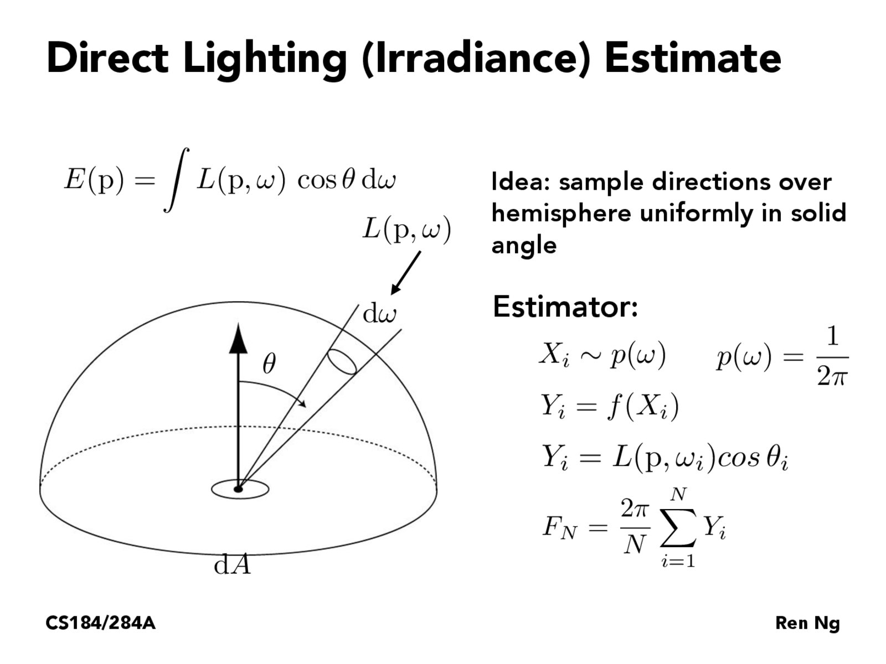
The issue that presents itself is that we are fundamentally unlikely to hit a light-emitting source if we sample uniformly in a hemisphere. In fact, most of what we sample will be non-light-emitting, and thus black, so our image will be relatively noisy as we occasionally hit a light and occasionally hit nothing.
The lecture slide below conveniently illustrates this issue:
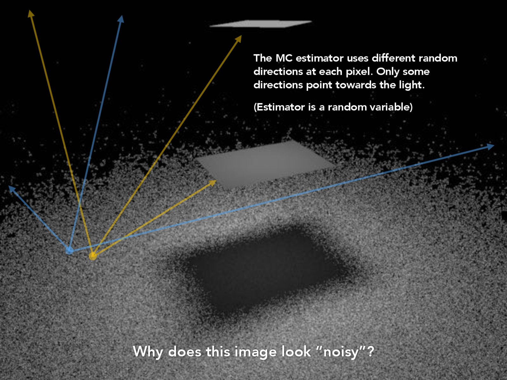
Importance sampling aims to fix this issue. Instead of sampling randomly from literally any direction in the hemisphere, we focus our samples on existing area- and point-lights. We accumulate light emitted from these sources into our final estimate, and they won’t be mixed in with random null values from non-emitting sources. In the same amount of time as uniform hemisphere sampling would take on an image, we can construct a far less noisy image using importance samlping.
The importance sampling algorithm is described below:
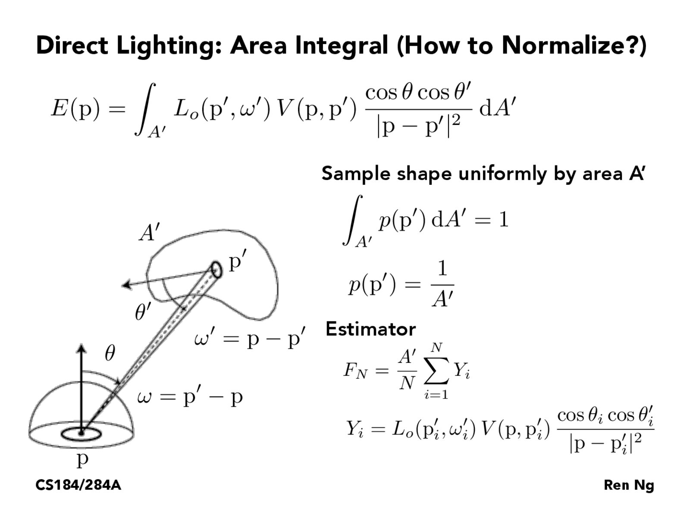
And the vast improvement from uniform-hemisphere is obvious:
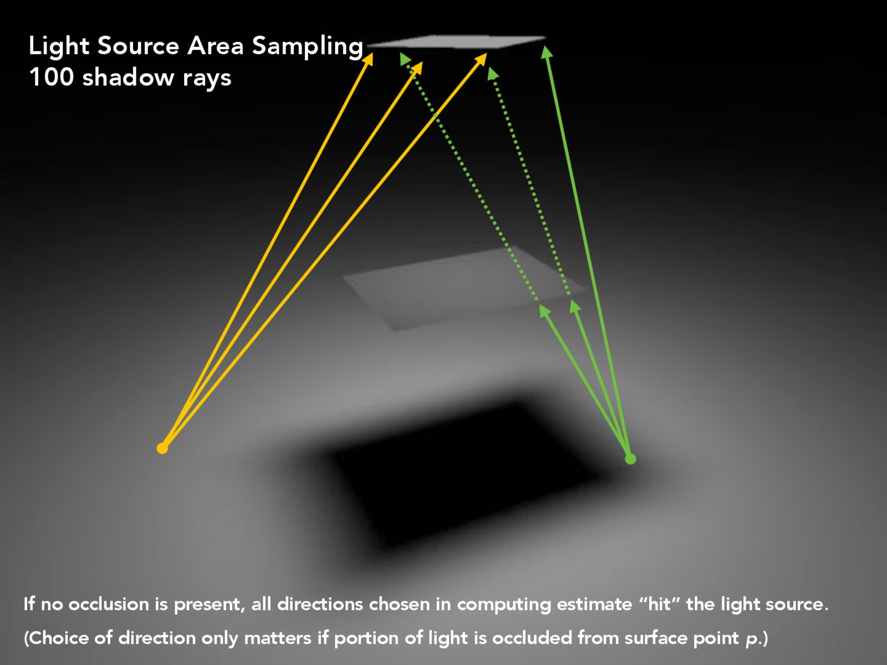
To generate the images below, I checked out the latest commit and ran the functions:
function 3_indirect() {
./pathtracer -t 20 -s 1 -l $1 -H -f 3_$2_$1_uhs.png -r 480 360 ../dae/sky/$2.dae
}
function 3_direct() {
./pathtracer -t 20 -s 1 -l $1 -f 3_$2_$1_is.png -r 480 360 ../dae/sky/$2.dae
}
function 3_direct_indirect() {
3_direct $1 $2
3_indirect $1 $2
}
# Requires ImageMagick
function 3_combined() {
rm *.png
3_direct_indirect 01 CBspheres_lambertian &&
3_direct_indirect 04 CBspheres_lambertian &&
3_direct_indirect 16 CBspheres_lambertian &&
3_direct_indirect 64 CBspheres_lambertian;
rm *rate.png;
montage *spheres*.png -tile 2x4 -geometry +2+2 3_sphere.png;
rm *_uhs.png && rm *_is.png;
3_direct_indirect 01 CBbunny &&
3_direct_indirect 04 CBbunny &&
3_direct_indirect 16 CBbunny &&
3_direct_indirect 64 CBbunny;
rm *rate.png;
montage *bunny*.png -tile 2x4 -geometry +2+2 3_bunny.png;
rm *_uhs.png && rm *_is.png;
}
The images are shown below. Each image satisfies all image requirements combined for Part 3 (1 sample, with 1 to 64 light rays.)
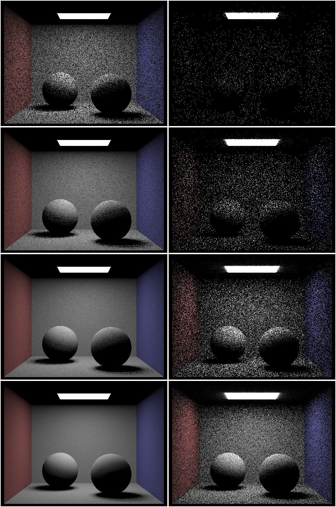
Comparing UHS with IS at 1, 4, 16, and 64 samples. IS at 1 sample is as clean as UHS at 64! Notice how the shadows never approach the cleanliness of IS at even 1 sample.
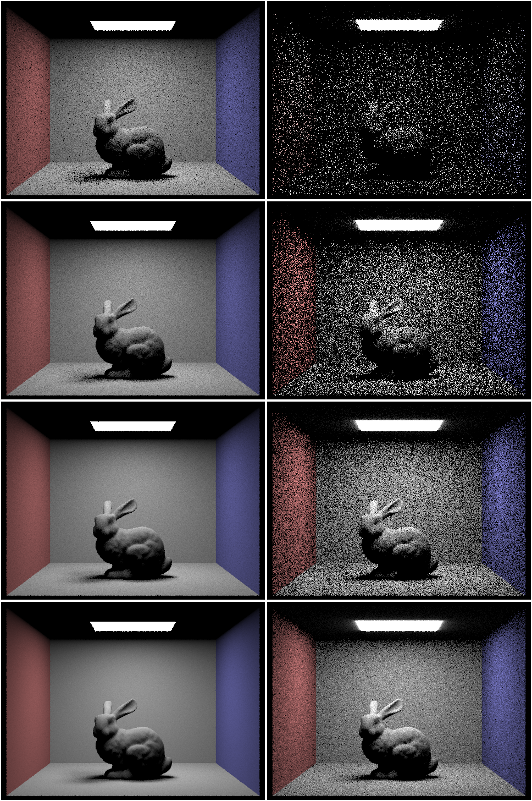
Comparing UHS with IS at 1, 4, 16, and 64 samples. Again, IS at 1 sample is as clean as UHS at 64! Again, the shadows are much better.
Clearly, the light-sampling nature of IS performs much better than UHS. By directly sampling the lights, our shadows become more uniform (see the slide above) and more consistent, because now the shadow is just a proportion of . By sampling lights, we drastically reduce noise and can render scenes with complex shadows much more quickly.
We’ve implemented “direct lighting”, in which we trace every point of interest to all light sources in the scene. However, objects can also contribute light as light reflects off of them - to create a more realistic rendering, we’d like to capture how light behaves when bouncing off of various objects in the scene.
Global illumination works by pushing a ray of light through multiple bounces until it terminates, either due to a probabilistically set factor (our Russian Roulette constant) or until it reaches a maximum bounce parameter. Global illumination is a simple recursive call utilizing the parts we’ve implemented earlier, added with our “zero bounce radiance” (light from light-emitting sources).
The algorithm is detailed in the slide below:
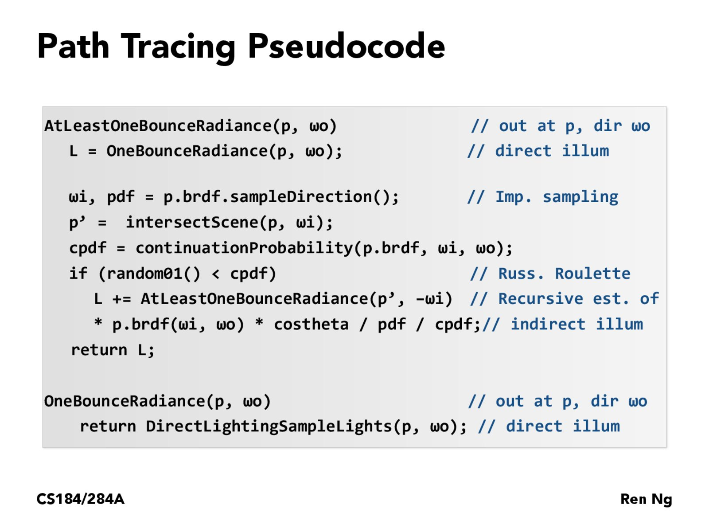
Of note is to set the cpdf to one for the very first bounce of each ray!
All examples below were run with the latest commit and the following shell script:
function 4_ray_depth() {
./pathtracer -t 20 -s 64 -l 16 -m $1 -r 480 360 -f 4_bunny_depth_$1.png ../dae/sky/CBbunny.dae
}
function 4_sample_rate() {
./pathtracer -t 20 -s $1 -l 4 -m 5 -r 480 360 -f 4_bunny_samples_$1.png ../dae/sky/CBbunny.dae
}
function 4_direct_indirect() {
./pathtracer -t 20 -s 64 -l 1 -m 1 -r 480 360 -f 4_sphere_dir.png ../dae/sky/CBspheres_lambertian.dae
./pathtracer -t 20 -s 64 -l 1 -m 5 -r 480 360 -f 4_sphere_ind.png ../dae/sky/CBspheres_lambertian.dae
montage *sphere*.png -tile 2x1 -geometry +2+2 4_comparison.png
}
function 4_comparison() {
4_ray_depth 000 &&
4_ray_depth 001 &&
4_ray_depth 002 &&
4_ray_depth 003 &&
4_ray_depth 100;
convert -loop 0 -delay 100 *depth*.png 4_depth.gif;
rm *depth*.png;
4_sample_rate 0001 &&
4_sample_rate 0002 &&
4_sample_rate 0004 &&
4_sample_rate 0008 &&
4_sample_rate 0016 &&
4_sample_rate 0064 &&
4_sample_rate 1024;
convert -loop 0 -delay 100 *sample*.png 4_sample.gif;
rm *00*.png; # keep 1024 it takes too long
}
Our first task is to compare both just direct and just indirect lighting. To accomplish this, I modified my code from
Spectrum PathTracer::est_radiance_global_illumination(const Ray &r) {
...
if (max_ray_depth == 1) { return zero_bounce_radiance(r, isect) + one_bounce_radiance(r, isect);}
if (max_ray_depth > 1) { return zero_bounce_radiance(r, isect) + at_least_one_bounce_radiance(r, isect); }
...
}
to
Spectrum PathTracer::one_bounce_radiance(const Ray&r, const Intersection& isect) {
...
if (r.depth == max_ray_depth) {L_out = Spectrum();}
...
}
Spectrum PathTracer::est_radiance_global_illumination(const Ray &r) {
...
if (max_ray_depth == 1) { return one_bounce_radiance(r, isect);}
if (max_ray_depth > 1) { return at_least_one_bounce_radiance(r, isect);}
...
}
The results are beautiful. On CBspheres_lambertian.dae, we see the bold direct lighting contributing the most and the subtle but realistic accents that indirect lighting introduces.
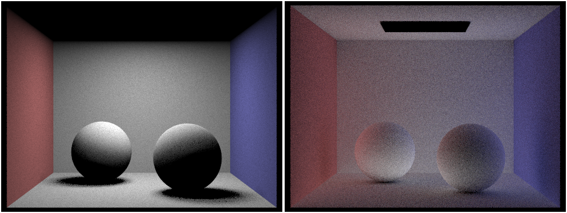
We don’t see the light because that’s zero-bounce radiance, and here we’re just comparing direct lighting versus the subsequent bounces!
After changing the code back, we can run through some more comparisons. Here, I render CBunny.dae with max_ray_depth at 0, 1, 2, 3, and 100:
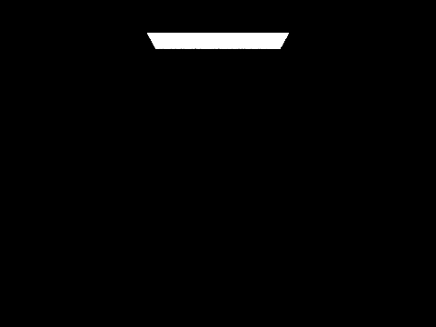
Notice how the image gets brighter as the depth increases. This is because we’re counting increased contribution of light because we accumulate more light from more bounces!
And below I’ve compared sample-per-pixel rates on the same CBunny.dae, trying out values 1, 2, 4, 8, 16, 64, and 1024:
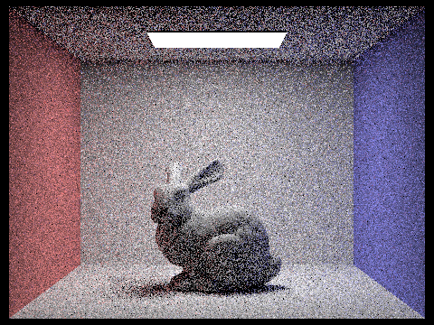
With more samples, we better approximate the true distribution of light and converge to a cleaner image.
The rabbit at a full 1204 samples looks particularly beautiful:
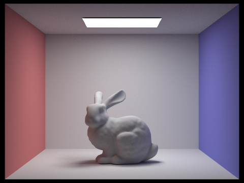
The biggest issue when sampling is not having enough light. When we’re in a well-lit area, we can easily converge to a good approximation of light with relatively few samples. But in dim areas, we will have much more variance, as we’ll occasionally sample a lot of light and occasionally not. Adaptive sampling is all about finding a balance - culling uneccessary samples in consistent, low-variance areas and sampling more in noisy, high-variance areas. In essence, adaptive sampling helps us to converge to an image just as clean, but faster.
We define a variable . Note that $I$ is small if the variance is small. We set a confidence/p-value of and check if . (This p-value is adjustable.) We keep on sampling until the condition is met - intuitively, in areas with consistent lighting, will be smaller and we’ll approach more quickly.
The image below was run with the following shell script on the latest commit:
function task_5 {
./pathtracer -t 20 -s 2048 -a 64 0.05 -l 1 -m 5 -r 480 360 -f 5_bunny_adaptive.png ../dae/sky/CBbunny.dae
montage *adaptive* -tile 2x1 -geometry +2+1 5_adaptive.png
}
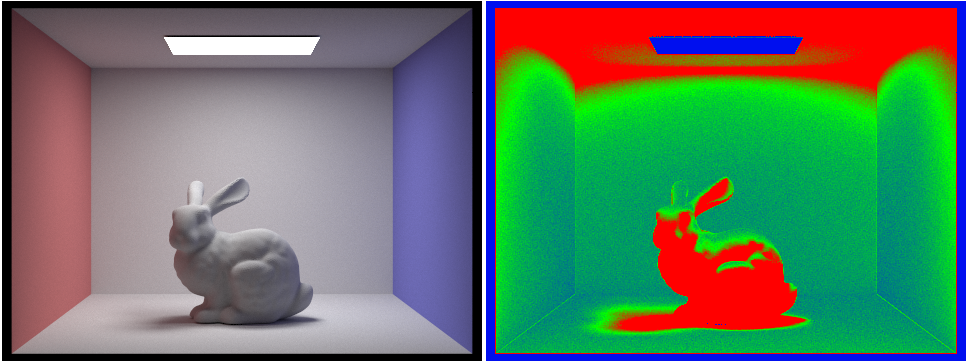
We can see that in noise-prone areas with soft shadows and even low lighting, adaptive sampling samples far closer to 2048 samples than it does in well-lit areas (like the light itself, for example.)